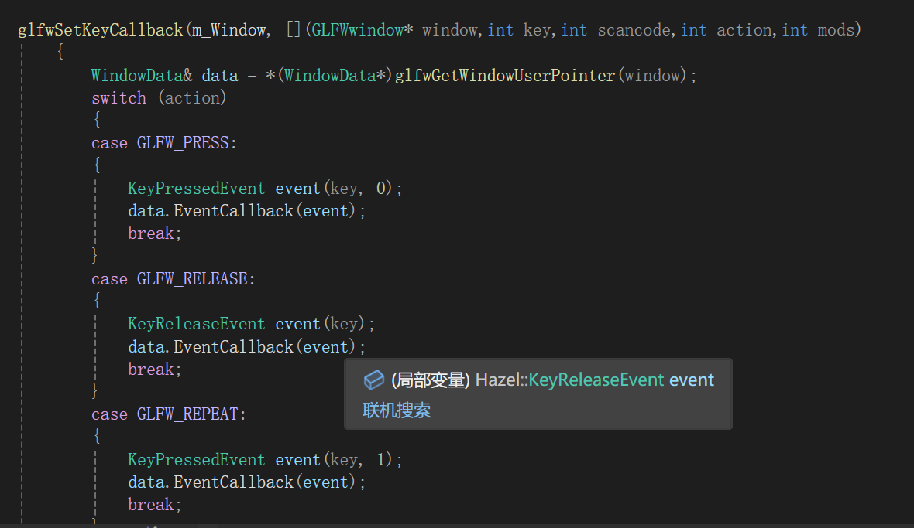
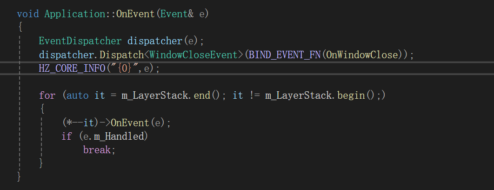
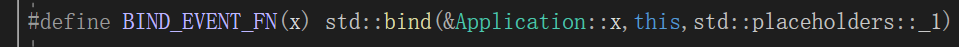
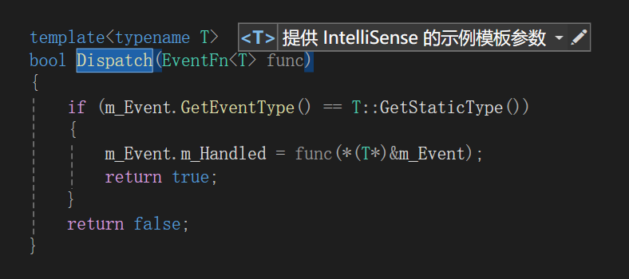

HazelEngine笔记4
EventSystem
为了响应玩家一些基本的输入响应，我们制作不论引擎还是任何应用程序都是需要事件系统读取玩家的操作。
话不多说我们一步一步来看事件系统是如何搭建起来的
enum class EventType
{
None = 0,
WindowClose,WindowResize,WindowFocus,WindowLostFocus,WindowMoved,
AppTick,AppUpdate,AppRender,
KeyPressed,KeyReleased,
MouseButtonPressed,MouseButtonReleased,MouseMoved,MouseScrolled
};
enum EventCategory
{
None=0,
EventCategoryApplication = BIT(0),
EventCategoryInput = BIT(1),
EventCategoryKeyboard = BIT(2),
EventCategoryMouse = BIT(3),
EventCategoryMouseButton = BIT(4),
};
EventType事件类型，这是用于日志系统输出日志，同时标记不同的玩家操作的，我们从待会的宏定义就可以看到。
EventCategory这个就是用于事件系统逻辑上的处理，首先我们可以看到这是利用bit位操作来标记的。
首先这个适用于layer上捕获玩家的操作的，当输入类型和当前事件需要捕获的类型相同（就是这个button需要你点击，当你点击在button上，而且正好是鼠标点击类型就会捕获你的操作，反观按键就不行），当前事件就会直接拦截你的操作不再向下传播这个操作
class HAZEL_API Event
{
friend class EventDispatcher;
public:
virtual EventType GetEventType()const = 0; //返回事件类型
virtual const char* GetName()const = 0; //返回事件的名称
virtual int GetCategoryFlags()const = 0; //获取事件需要捕获的操作
virtual std::string ToString()const { return GetName(); }
inline bool IsInCategory(EventCategory category)
{
return GetCategoryFlags() & category;
}
bool m_Handled = false;
protected:
};
inline std::ostream& operator<<(std::ostream& os, const Event& e)
{
return os << e.ToString();
}
我们可以看到一个基本事件基类的设置
- 事件调度类待会细说，因为EventDispatcher需要访问Event的一些内容，所以需要友元。
- 重载输出流<<和ToString是为了迎合spdlog可以输出自定义类，这个前面有说也就不细说了。
- IsInCategory就是为了判别当前的操作是否属于某个事件需要的操作类型，如果是，那就捕获你，调用我的回调函数响应玩家的操作。（后面dispatch会细说）
因为对于不同的子类，我们都需要覆写虚函数，为了方便我们定义了宏，方便操作。
#define EVENT_CLASS_TYPE(type) \
static EventType GetStaticType(){ return EventType::##type;}\
virtual EventType GetEventType() const override {return GetStaticType();}\
virtual const char* GetName()const override {return #type;}
#define EVENT_CLASS_CATEGORY(category) virtual int GetCategoryFlags() const override {return category;}
解读之前补充一下，宏定义的\表示行连接，表示与下一行是连续的，会被预处理解读为一行代码
然后就是
##操作符用于将两个宏参数拼接成一个标识符。它常用于生成新的变量名或函数名。（将EventType和type连接起来，因为此时不知到type是什么）
#用于将宏参数转换为字符串，即把参数名称本身转成字符串字面量。它通常用于调试或生成字符串字面量。就是直接将type转换为字符串
这样我们只要在子类调用这样的宏，传入对应的事件类型，就可以直接展开拥有这些函数。
接下来让我们先看看应用程序的一些事件。
class HAZEL_API WindowResizeEvent :public Event
{
public:
WindowResizeEvent(unsigned int width, unsigned int height)
:m_Width(width), m_Height(height) {}
inline unsigned int GetWidth() const { return m_Width; }
inline unsigned int GetHeight() const { return m_Height; }
std::string ToString()const override
{
std::stringstream ss;
ss << "WindowResizeEvent: " << m_Width << ", " << m_Height;
return ss.str();
}
EVENT_CLASS_TYPE(WindowResize)
EVENT_CLASS_CATEGORY(EventCategoryApplication)
private:
unsigned int m_Width, m_Height;
};
这是一个调整程序窗口的函数，基本的窗口数据，覆写的函数，没啥好说的。
class HAZEL_API WindowCloseEvent :public Event
{
public:
WindowCloseEvent(){}
EVENT_CLASS_TYPE(WindowClose)
EVENT_CLASS_CATEGORY(EventCategoryApplication)
};
应用程序窗口关闭的事件。
class HAZEL_API WindowTickEvent :public Event
{
public:
WindowTickEvent(){}
EVENT_CLASS_TYPE(AppTick)
EVENT_CLASS_CATEGORY(EventCategoryApplication)
};
class HAZEL_API AppUpdateEvent :public Event
{
public:
AppUpdateEvent(){}
EVENT_CLASS_TYPE(AppUpdate)
EVENT_CLASS_CATEGORY(EventCategoryApplication)
};
详细说一说这俩个事件。
我当时还在想为啥数据更新为什么分成俩个。
WindowTickEvent主要用于窗口和界面方面的更新，确保窗口能实时反映变化。AppUpdateEvent更适合逻辑方面的更新，尤其是需要独立于窗口的系统更新。
AppUpdate主要负责底层的数据处理和更新，类似物理计算，数据处理和储存，这样的逻辑与屏幕的刷新频率无关，处理的甚至更快。
TickEvent则是负责屏幕内容的数据更新，这与屏幕的刷新频率相关，例如每一帧的动画更新，处理推迟缓冲的事件（暂时不懂），更新用户界面。
显然AppUpdate处理逻辑数据，TickEvent将最终状态显示在窗口中，逻辑先于窗口更新发生。
class HAZEL_API AppRenderEvent :public Event
{
public:
AppRenderEvent() {}
EVENT_CLASS_TYPE(AppRender)
EVENT_CLASS_CATEGORY(EventCategoryApplication)
};
这个就是应用程序的渲染事件，暂时不太了解暂不赘述。
按键事件
class KeyEvent:public Event
{
public:
inline int GetKeyCode()const { return m_KeyCode; }
EVENT_CLASS_CATEGORY(EventCategoryKeyboard | EventCategoryInput)
protected:
KeyEvent(int keycode)
:m_KeyCode(keycode){}
int m_KeyCode;
};
先基于Event类先封装一个KeyEvent类，然后具体的按键再通过继承KeyEvent
增加了一个返回对应键码的函数。
同时我们也注意到，按键事件属于：键盘（EventCategoryKeyboard）和输入类型（EventCategoryInput）。
class HAZEL_API KeyPressedEvent :public KeyEvent
{
public:
KeyPressedEvent(int keycode, int repeatCount)
:KeyEvent(keycode),m_RepeatCount(repeatCount){}
inline int GetRepeatCount()const { return m_RepeatCount; }
std::string ToString() const override
{
std::stringstream ss;
ss << "KeyPressedEvent: " << m_KeyCode << "(" << m_RepeatCount << "repeats)";
return ss.str();
}
EVENT_CLASS_TYPE(KeyPressed)
private:
int m_RepeatCount;
};
class HAZEL_API KeyReleaseEvent :public KeyEvent
{
public:
KeyReleaseEvent(int keycode)
:KeyEvent(keycode){}
std::string ToString() const override
{
std::stringstream ss;
ss << "KeyReleasedEvent: " << m_KeyCode;
return ss.str();
}
EVENT_CLASS_TYPE(KeyReleased)
};
然后就是按下按键和释放按键。
对于按下按键我们显然要处理长按的玩家操作，我们通过m_RepeatCount来记录当前这个按下按键是否连续。
glfw通过调用window的API读取玩家操作，我们可以根据对应的API返回类型判断。
当有Repeat事件，我们就会创建m_RepeatCount=1的按下事件。
然后就是MouseEvent
class HAZEL_API MouseMovedEvent :public Event
{
public:
MouseMovedEvent(float x, float y)
:m_MouseX(x),m_MouseY(y){}
inline float GetX() const { return m_MouseX; }
inline float GetY() const { return m_MouseY; }
std::string ToString()const override
{
std::stringstream ss;
ss << "MouseMoveEvent: " << m_MouseX << "," << m_MouseY;
return ss.str();
}
EVENT_CLASS_TYPE(MouseMoved)
EVENT_CLASS_CATEGORY(EventCategoryMouse | EventCategoryInput)
private:
float m_MouseX, m_MouseY;
};
class HAZEL_API MouseScrolledEvent : public Event
{
public:
MouseScrolledEvent(float xOffset,float yOffset)
:m_XOffset(xOffset),m_YOffset(yOffset){}
inline float GetXOffset()const { return m_XOffset; }
inline float GetYOffset()const { return m_YOffset; }
std::string ToString()const override
{
std::stringstream ss;
ss << "MouseScrolledEvent: " << GetXOffset() << "," << GetYOffset();
return ss.str();
}
EVENT_CLASS_TYPE(MouseScrolled)
EVENT_CLASS_CATEGORY(EventCategoryMouse | EventCategoryInput)
private:
float m_XOffset, m_YOffset;
};
class HAZEL_API MouseButtonEvent :public Event
{
public:
inline int GetMouseEvent()const { return m_Button; }
EVENT_CLASS_CATEGORY(EventCategoryMouse | EventCategoryInput)
protected:
MouseButtonEvent(int button)
:m_Button(button){}
int m_Button;
};
class HAZEL_API MouseButtonPressedEvent : public MouseButtonEvent
{
public:
MouseButtonPressedEvent(int button)
:MouseButtonEvent(button){}
std::string ToString() const override
{
std::stringstream ss;
ss << "MouseButtonPressedEvent: " << m_Button;
return ss.str();
}
EVENT_CLASS_TYPE(MouseButtonPressed)
};
class HAZEL_API MouseButtonReleasedEvent : public MouseButtonEvent
{
public:
MouseButtonReleasedEvent(int button)
:MouseButtonEvent(button) {}
std::string ToString() const override
{
std::stringstream ss;
ss << "MouseButtonReleasedEvent: " << m_Button;
return ss.str();
}
EVENT_CLASS_TYPE(MouseButtonReleased)
};
没啥好说的，包含了鼠标移动，滚轮事件，鼠标点击（鼠标按下，鼠标松开）的四个事件。
就来看一下Dispatch（事件调度）
class EventDispatcher
{
template<typename T>
using EventFn = std::function<bool(T&)>;
public:
EventDispatcher(Event& event)
:m_Event(event){}
template<typename T>
bool Dispatch(EventFn<T> func)
{
if (m_Event.GetEventType() == T::GetStaticType())
{
m_Event.m_Handled = func(*(T*)&m_Event);
return true;
}
return false;
}
private:
Event& m_Event;
};
using EventFn = std::function<bool(T&)>;//这是一个返回bool的函数指针类型，简化了。
每准确的来说，事件调度是用于捕获操作事件的时候用的。
重要的就是我当前layer拉取的回调函数对应的事件和你传递的事件类型是否相同。
例如我当前优先处理页面关闭的逻辑我就会这样设计处理。
首先我们需要理解你输入的操作是需要从最上层（存放vector的最底层，最新的layer）往下传递的。
窗口应用程序的关闭优先程度肯定是最高的。所以首先为其分配一个事件调度处理传进来的事件。
EventDispatcher dispatcher(e);
然后我们利用Dispatch的函数传递我们需要捕获的类型和对应触发的回调函数，检查是否和传递的事件类型相同，相同就标记处理，不再向下传递。
我们具体来看看怎么实现的。
dispatcher.Dispatch<WindowCloseEvent>(BIND_EVENT_FN(OnWindowClose));
我们首先看一下BING_EVENT_FN的宏定义是什么
std::bind和lambda的区别
std::bind是 C++ 标准库中的一个函数模板，用于将函数或成员函数与参数绑定，从而创建一个新的可调用对象。讲的通俗一点其实就是返回一个可调用的函数（如果你懂lambda的话，其实差不多）
std::bind(绑定对象的函数地址，绑定的对象（this表明绑定时当前的Application实例），std::placeholders::_1,…_2以此类推)
后面_1，_2的占位符就是传入绑定的函数对象（传入Application::x函数）的参数。
其实这么长其实就等于lambda
([this](Event& event) {this->OnEvent(event);})【this】表示捕获当前的实例的值，参数时Event& ，然后就是函数内的操作。
至于返回值我们可以回忆一下lambda的语法：
**
[&]**：按引用捕获外部所有变量（即可以在 Lambda 中修改这些变量）。**
[=]**：按值捕获外部所有变量（即在 Lambda 中不可修改这些变量）。**
[this]**：竟然是捕获当前的实例内的所有变量。对于lambda的返回类型（其实大多应该没有返回值，只有对应的逻辑操作吧）
- 自动推导
auto add = [](int a, int b) { return a + b; };
- 显式推导
[捕获列表](参数列表) -> 返回类型 { 函数体 }
然后我们看最上层的逻辑优先处理窗口关闭的事件。于是我们
EventDispatcher dispatcher(e);
dispatcher.Dispatch<WindowCloseEvent>(BIND_EVENT_FN(OnWindowClose));
为传递的事件创建一个调度对象，将e放进去。
窗口关闭需要的类型是WindowCloseEvent，作为模板传进去，同时传入回调函数。
然后检查我当前需要回调函数（关闭窗口的操作）需要的事件类型是否相同，不同则跳过，相同则执行对应的回调函数逻辑。
func(*(T*)&m_Event)//如果符合，就把当前事件作为参数传进去，执行回调逻辑
当回调逻辑执行成功会返回true，标记当前Event已被捕获处理（直接修改传进来的Event内部数据），不再向下传递。
这里我们看一下(*(T*)&m_Event)这个操作
首先我们先了解一下父子指针关系。
我们先从内存布局上来看
从内存布局的角度来看，
Derived类对象的结构大致如下：（先是父类，然后是子类）| base| sub |然后刚看过操作系统一书了解到虚表（virtualtable）的概念，这是类实现多态的机制，存在于父类的内存中。虚表中存放对应虚函数的实现地址（例如子类实现了父类的虚函数）。
当用父类指针（从子类指针转换过来的，表明此时虚表已经有内容了）调用虚函数，检查虚表最终还是调用子类的函数。
从内存布局上来看显然子类指针转换为父类指针完全是安全的，而且还可以调用子类实现的函数。
父类指针转为子类显然是不行的（除非父类指针一开始就是从子类转过来的，又转回去了）
我们从glfw创建的事件来看一开始就是子类对象，只不过Event接受参数是父类指针。
其中调用的函数（GetEventType）都是子类覆写父类的虚函数，所以依然是调用子类的函数，从而可以检查对应的类型。
Dispatch只不过是将这个指针又强行变回对应的子事件类指针传递到回调函数，所以没啥影响。
事件系统就到此为止啦，感谢阅读，希望能帮到你。